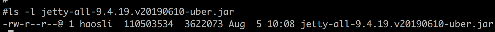
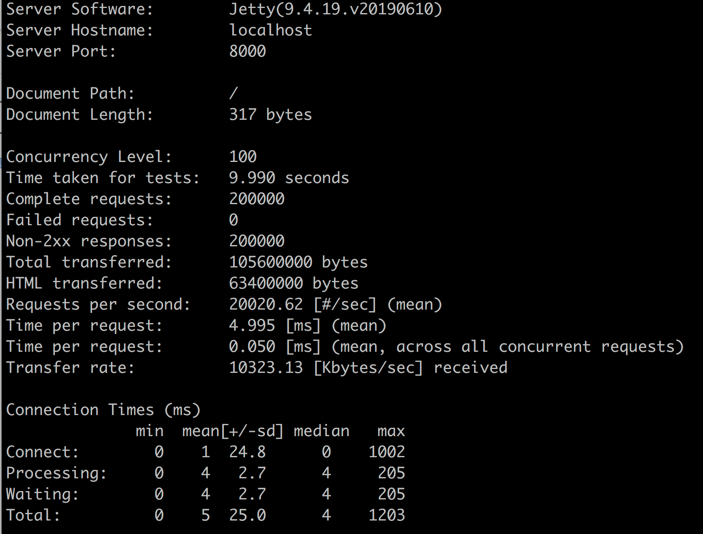
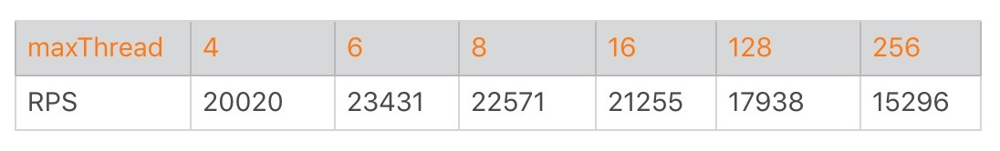

- 00 开篇词 Java程序员如何快速成长？.md.html
- 01 Web容器学习路径.md.html
- 02 HTTP协议必知必会.md.html
- 03 你应该知道的Servlet规范和Servlet容器.md.html
- 04 实战：纯手工打造和运行一个Servlet.md.html
- 05 Tomcat系统架构（上）： 连接器是如何设计的？.md.html
- 06 Tomcat系统架构（下）：聊聊多层容器的设计.md.html
- 07 Tomcat如何实现一键式启停？.md.html
- 08 Tomcat的“高层们”都负责做什么？.md.html
- 09 比较：Jetty架构特点之Connector组件.md.html
- 10 比较：Jetty架构特点之Handler组件.md.html
- 11 总结：从Tomcat和Jetty中提炼组件化设计规范.md.html
- 12 实战：优化并提高Tomcat启动速度.md.html
- 13 热点问题答疑（1）：如何学习源码？.md.html
- 14 NioEndpoint组件：Tomcat如何实现非阻塞I_O？.md.html
- 15 Nio2Endpoint组件：Tomcat如何实现异步I_O？.md.html
- 16 AprEndpoint组件：Tomcat APR提高I_O性能的秘密.md.html
- 17 Executor组件：Tomcat如何扩展Java线程池？.md.html
- 18 新特性：Tomcat如何支持WebSocket？.md.html
- 19 比较：Jetty的线程策略EatWhatYouKill.md.html
- 20 总结：Tomcat和Jetty中的对象池技术.md.html
- 21 总结：Tomcat和Jetty的高性能、高并发之道.md.html
- 22 热点问题答疑（2）：内核如何阻塞与唤醒进程？.md.html
- 23 Host容器：Tomcat如何实现热部署和热加载？.md.html
- 24 Context容器（上）：Tomcat如何打破双亲委托机制？.md.html
- 25 Context容器（中）：Tomcat如何隔离Web应用？.md.html
- 26 Context容器（下）：Tomcat如何实现Servlet规范？.md.html
- 27 新特性：Tomcat如何支持异步Servlet？.md.html
- 28 新特性：Spring Boot如何使用内嵌式的Tomcat和Jetty？.md.html
- 29 比较：Jetty如何实现具有上下文信息的责任链？.md.html
- 30 热点问题答疑（3）：Spring框架中的设计模式.md.html
- 31 Logger组件：Tomcat的日志框架及实战.md.html
- 32 Manager组件：Tomcat的Session管理机制解析.md.html
- 33 Cluster组件：Tomcat的集群通信原理.md.html
- 34 JVM GC原理及调优的基本思路.md.html
- 35 如何监控Tomcat的性能？.md.html
- 36 Tomcat I_O和线程池的并发调优.md.html
- 37 Tomcat内存溢出的原因分析及调优.md.html
- 38 Tomcat拒绝连接原因分析及网络优化.md.html
- 39 Tomcat进程占用CPU过高怎么办？.md.html
- 40 谈谈Jetty性能调优的思路.md.html
- 41 热点问题答疑（4）： Tomcat和Jetty有哪些不同？.md.html
- 特别放送 如何持续保持对学习的兴趣？.md.html
- 结束语 静下心来，品味经典.md.html
- 捐赠
40 谈谈Jetty性能调优的思路
关于Tomcat的性能调优，前面我主要谈了工作经常会遇到的有关JVM GC、监控、I/O和线程池以及CPU的问题定位和调优，今天我们来看看Jetty有哪些调优的思路。
关于Jetty的性能调优，官网上给出了一些很好的建议，分为操作系统层面和Jetty本身的调优，我们将分别来看一看它们具体是怎么做的，最后再通过一个实战案例来学习一下如何确定Jetty的最佳线程数。
操作系统层面调优
对于Linux操作系统调优来说，我们需要加大一些默认的限制值，这些参数主要可以在/etc/security/limits.conf中或通过sysctl命令进行配置，其实这些配置对于Tomcat来说也是适用的，下面我来详细介绍一下这些参数。
TCP缓冲区大小
TCP的发送和接收缓冲区最好加大到16MB，可以通过下面的命令配置：
sysctl -w net.core.rmem_max = 16777216
sysctl -w net.core.wmem_max = 16777216
sysctl -w net.ipv4.tcp_rmem =“4096 87380 16777216”
sysctl -w net.ipv4.tcp_wmem =“4096 16384 16777216”
TCP队列大小
net.core.somaxconn控制TCP连接队列的大小，默认值为128，在高并发情况下明显不够用，会出现拒绝连接的错误。但是这个值也不能调得过高，因为过多积压的TCP连接会消耗服务端的资源，并且会造成请求处理的延迟，给用户带来不好的体验。因此我建议适当调大，推荐设置为4096。
sysctl -w net.core.somaxconn = 4096
net.core.netdev_max_backlog用来控制Java程序传入数据包队列的大小，可以适当调大。
sysctl -w net.core.netdev_max_backlog = 16384
sysctl -w net.ipv4.tcp_max_syn_backlog = 8192
sysctl -w net.ipv4.tcp_syncookies = 1
端口
如果Web应用程序作为客户端向远程服务器建立了很多TCP连接，可能会出现TCP端口不足的情况。因此最好增加使用的端口范围，并允许在TIME_WAIT中重用套接字：
sysctl -w net.ipv4.ip_local_port_range =“1024 65535”
sysctl -w net.ipv4.tcp_tw_recycle = 1
文件句柄数
高负载服务器的文件句柄数很容易耗尽，这是因为系统默认值通常比较低，我们可以在/etc/security/limits.conf中为特定用户增加文件句柄数：
用户名 hard nofile 40000
用户名 soft nofile 40000
拥塞控制
Linux内核支持可插拔的拥塞控制算法，如果要获取内核可用的拥塞控制算法列表，可以通过下面的命令：
sysctl net.ipv4.tcp_available_congestion_control
这里我推荐将拥塞控制算法设置为cubic：
sysctl -w net.ipv4.tcp_congestion_control = cubic
Jetty本身的调优
Jetty本身的调优，主要是设置不同类型的线程的数量，包括Acceptor和Thread Pool。
Acceptors
Acceptor的个数accepts应该设置为大于等于1，并且小于等于CPU核数。
Thread Pool
限制Jetty的任务队列非常重要。默认情况下，队列是无限的！因此，如果在高负载下超过Web应用的处理能力，Jetty将在队列上积压大量待处理的请求。并且即使负载高峰过去了，Jetty也不能正常响应新的请求，这是因为仍然有很多请求在队列等着被处理。
因此对于一个高可靠性的系统，我们应该通过使用有界队列立即拒绝过多的请求（也叫快速失败）。那队列的长度设置成多大呢，应该根据Web应用的处理速度而定。比如，如果Web应用每秒可以处理100个请求，当负载高峰到来，我们允许一个请求可以在队列积压60秒，那么我们就可以把队列长度设置为60 × 100 = 6000。如果设置得太低，Jetty将很快拒绝请求，无法处理正常的高峰负载，以下是配置示例：
<Configure id="Server" class="org.eclipse.jetty.server.Server">
<Set name="ThreadPool">
<New class="org.eclipse.jetty.util.thread.QueuedThreadPool">
<!-- specify a bounded queue -->
<Arg>
<New class="java.util.concurrent.ArrayBlockingQueue">
<Arg type="int">6000</Arg>
</New>
</Arg>
<Set name="minThreads">10</Set>
<Set name="maxThreads">200</Set>
<Set name="detailedDump">false</Set>
</New>
</Set>
</Configure>
那如何配置Jetty的线程池中的线程数呢？跟Tomcat一样，你可以根据实际压测，如果I/O越密集，线程阻塞越严重，那么线程数就可以配置多一些。通常情况，增加线程数需要更多的内存，因此内存的最大值也要跟着调整，所以一般来说，Jetty的最大线程数应该在50到500之间。
Jetty性能测试
接下来我们通过一个实验来测试一下Jetty的性能。我们可以在这里下载Jetty的JAR包。

第二步我们创建一个Handler，这个Handler用来向客户端返回“Hello World”，并实现一个main方法，根据传入的参数创建相应数量的线程池。
public class HelloWorld extends AbstractHandler {
@Override
public void handle(String target, Request baseRequest, HttpServletRequest request, HttpServletResponse response) throws IOException, ServletException {
response.setContentType("text/html; charset=utf-8");
response.setStatus(HttpServletResponse.SC_OK);
response.getWriter().println("<h1>Hello World</h1>");
baseRequest.setHandled(true);
}
public static void main(String[] args) throws Exception {
//根据传入的参数控制线程池中最大线程数的大小
int maxThreads = Integer.parseInt(args[0]);
System.out.println("maxThreads:" + maxThreads);
//创建线程池
QueuedThreadPool threadPool = new QueuedThreadPool();
threadPool.setMaxThreads(maxThreads);
Server server = new Server(threadPool);
ServerConnector http = new ServerConnector(server,
new HttpConnectionFactory(new HttpConfiguration()));
http.setPort(8000);
server.addConnector(http);
server.start();
server.join();
}
}
第三步，我们编译这个Handler，得到HelloWorld.class。
javac -cp jetty.jar HelloWorld.java
第四步，启动Jetty server，并且指定最大线程数为4。
java -cp .:jetty.jar HelloWorld 4
第五步，启动压测工具Apache Bench。关于Apache Bench的使用，你可以参考这里。
ab -n 200000 -c 100 http://localhost:8000/
上面命令的意思是向Jetty server发出20万个请求，开启100个线程同时发送。
经过多次压测，测试结果稳定以后，在Linux 4核机器上得到的结果是这样的：

从上面的测试结果我们可以看到，20万个请求在9.99秒内处理完成，RPS达到了20020。 不知道你是否好奇，为什么我把最大线程数设置为4呢？是不是有点小？
别着急，接下来我们就试着逐步加大最大线程数，直到找到最佳值。下面这个表格显示了在其他条件不变的情况下，只调整线程数对RPS的影响。

我们发现一个有意思的现象，线程数从4增加到6，RPS确实增加了。但是线程数从6开始继续增加，RPS不但没有跟着上升，反而下降了，而且线程数越多，RPS越低。
发生这个现象的原因是，测试机器的CPU只有4核，而我们测试的程序做得事情比较简单，没有I/O阻塞，属于CPU密集型程序。对于这种程序，最大线程数可以设置为比CPU核心稍微大一点点。那具体设置成多少是最佳值呢，我们需要根据实验里的步骤反复测试。你可以看到在我们这个实验中，当最大线程数为6，也就CPU核数的1.5倍时，性能达到最佳。
本期精华
今天我们首先学习了Jetty调优的基本思路，主要分为操作系统级别的调优和Jetty本身的调优，其中操作系统级别也适用于Tomcat。接着我们通过一个实例来寻找Jetty的最佳线程数，在测试中我们发现，对于CPU密集型应用，将最大线程数设置CPU核数的1.5倍是最佳的。因此，在我们的实际工作中，切勿将线程池直接设置得很大，因为程序所需要的线程数可能会比我们想象的要小。
课后思考
我在今天文章前面提到，Jetty的最大线程数应该在50到500之间。但是我们的实验中测试发现，最大线程数为6时最佳，这是不是矛盾了？
不知道今天的内容你消化得如何？如果还有疑问，请大胆的在留言区提问，也欢迎你把你的课后思考和心得记录下来，与我和其他同学一起讨论。如果你觉得今天有所收获，欢迎你把它分享给你的朋友。
© 2019 - 2023 Liangliang Lee. Powered by gin and hexo-theme-book.